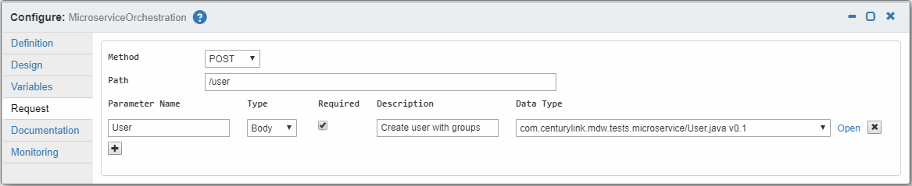

A workflow process can be declaratively mapped to a REST request. The unique key for this mapping is the combination of HTTP method and request path.
The screenshot below illustrates how to configure a workflow request mapping in MDWHub. The depicted Request tab is available in the Configurator for a process definition.
